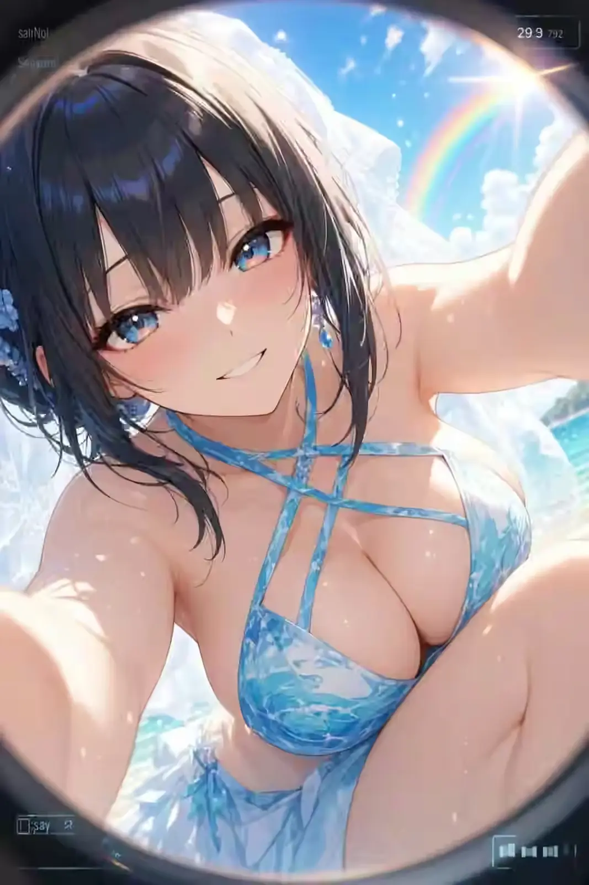

FOUR CHARACTERS / FOUR MOODS
SKY
GARDEN
QUARTET
空中庭園四重奏
虹の海辺を駆けるアオイ、白銀の角と翼を持つルシア、紫のラウンジで夜を眺めるレイナ、都会の灯りを愛する猫耳のミオ。四つの異なる空気を、軽快なビジュアルとVOICEVOX:ずんだもんの紹介ボイスで巡るキャラクターポータル。

FOUR VISUALS / FOUR VOICES
虹の海辺を駆けるアオイ、白銀の角と翼を持つルシア、紫のラウンジで夜を眺めるレイナ、都会の灯りを愛する猫耳のミオ。四つの異なる空気を、軽快なビジュアルとVOICEVOX:ずんだもんの紹介ボイスで巡るキャラクターポータル。
